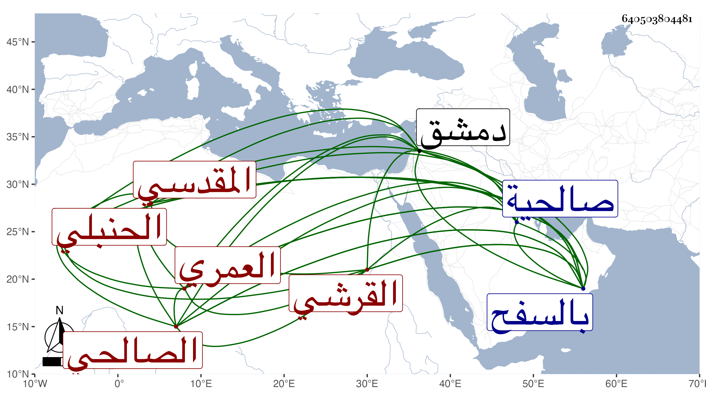

0902Sakhawi.DawLamic.ITO20230111-ara1.EIS1600.640503804481
Biography ID: 640503804481
197
عبد الرحمن بن أبي بكر بن عبد الرحمن بن محمد بن أحمد بن سليمان بن حمزة بن أحمد بن عمر بن الشيخ أبي عمر زين الدين بن العماد القرشي العمري المقدسي الصالحي الحنبلي أخو عبد الله وناصر الدين محمد الآتيين ويعرف كسلفه بابن زريق بمعجمة ثم راء وآخره قاف مصغر ، ولد في خامس رمضان سنة تسع وثمانين وسبعمائة بالسفح من صالحية دمشق ونشأ بها وسمع على أبي هريرة بن الذهبي وأبي بكر بن إبراهيم بن العز ومحمد بن محمد بن داود بن حمزة وأبي حفص عمر البالسي وعبد الله الحرستاني في الآخرين ومما سمعه على الأول الأربعين تخريج أبيه له ، وأجاز له ابن العلائي وابن أبي المجد والحلاوي والسويداوي وجماعة ، وحدث سمع منه الفضلاء . مات فجأة في سحر يوم الثلاثاء رابع عشر ربيع الآخر سنة ثمان وثلاثين ، وصلى عليه قبيل ظهره بالجامع المظفري ، ودفن بتربة جده أبي عمر بالسفح وشيعه خلق كثير رحمه الله .
